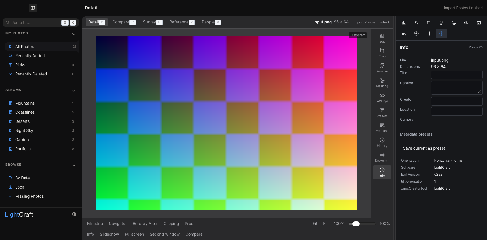
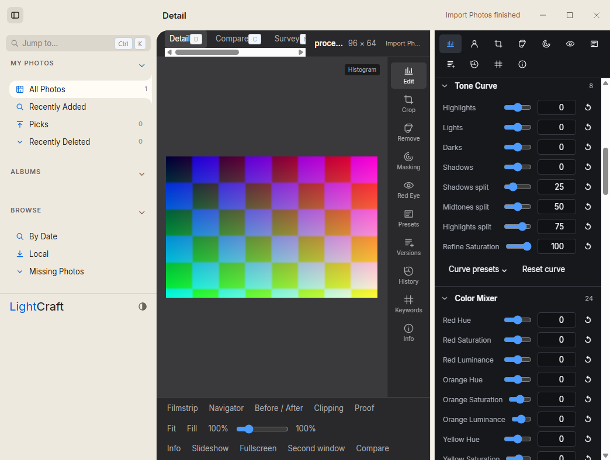
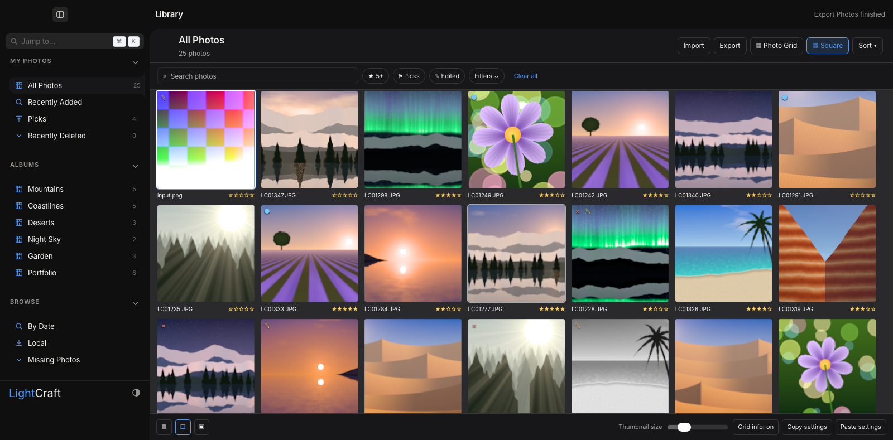

Actual app verification
Current source b2d3ee5 · captured 8 October 2026 · existing RightKit control0.1.6 & QA0.2.6.
Import → decoded preview → exposure0.75 → undo0 → PNG export. Export decoded at96×64 with6,144 distinct colours.
Import/export, HDR, IPC, stale preview, cache, scalability, preferences, gestures, editing tools, Sony ARW, Lightroom import & catalog recovery.
Backup unchanged after mutation; fresh-copy restore recovered exposure1.25 & catalog counts; native Open Library decoded selected photo. Same-process check.
Source contracts, frontend typecheck/build & Rust fmt, clippy, tests, parity, layers, assets & WASM checks.
Mac · actual running app
Real packaged WKWebView & Rust engine, displaying imported procedural colour fixture. Tap image for full-resolution zoom.

Windows · actual CI app

Mac · restored catalog

Remaining qualification
Mac binary compiled successfully. Strict Mac CI still fails foreground identity tracking &1280×800 viewport sizing, which native display clamps to1280×684. Local LaunchServices startup stalled in socket cleanup/bind; launching existing bundle executable with isolated QA storage passed. No OS permissions were changed.
Mac recovery across application restart, installer rollback & current-revision coexistence still need exact evidence. Preview stays separate from installed LightCraft. Production visual refresh is still represented by design mockups.